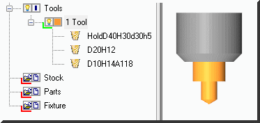
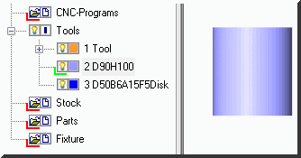

To create a milling tool you have to set its type, form and dimensions. There are two types of tools: milling and turning. milling tool can be created only in milling project or turning-milling project.
Let's set up some definitions.
There are three types of elements which define the tool. Standard tool, disk-shaped tool and holder. Any particular tool could be defined by any set of threes elements. All the items in a set are sorted by shift amount and are placed in a tool tree. On the picture you can see the tool number 1 named "Tool", which consists of three elements (10 mm drill bit, 20 mm end-milling cutter and a holder).

The simplest tool consists of one element. On the picture you can see the tool number 2 named "D90H100", 90mm diameter and 100 mm height.

Example. To create a drill bit you should create one element by pressing on "Add standard tool" button. If you need a drill bit to have a holder, add a holder element to this tool. As a result you should have a tool defined by two elements, let's call it complex.
Let's look through milling tool creation process. When you call Create…, a dialog box appears:
The name of a tool is created automatically and is displayed in a tool tree after its number. You can set tool name manually.
Cutter ID is a number of tool to load it from Cnc-program.
Tool axis number. This parameter allows you to set the tool at any angle to the spindle axis. Axis orientation and number are set in a machining station description file.
Turret is a tool bank number.
Marker parameter defines the size of a tool marker.Tool marker displays the tool position when tool is hidden or its shape is not defined. Default marker size is set in Settings>Parameters>Graphics>Tool Marker.
Z Shift is a tool shift along the spindle axis.
Add drill bits or end-milling cutters and define their parameters.
Add special-type tools and set their parameters. Follow the instructions.
Define the holder for the tool.
Any tool can be defined by any set of end tools, disk-shaped tools and any number of holders, i.e. be complex. This list displays names of tools which form complex tool, sorted by Z shift amount in descending order.
End-milling cutter with holder:

When you set up the next element, Z shift amount automatically increases by previous element length. I.e. each following element is joined to the end of previous element end. You may set Z shift amount manually.
Centering with holder:

Disk-shaped tool with holder:

Milling cutter for edging with holder:

When at lest one simple tool is set, following command become active:
Edit tool parameters.
Delete the tool from set.